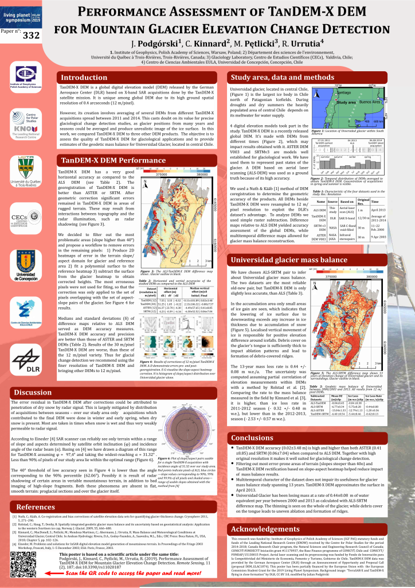

<?xml version="1.0" encoding="UTF-8"?><rss version="2.0"
	xmlns:content="http://purl.org/rss/1.0/modules/content/"
	xmlns:wfw="http://wellformedweb.org/CommentAPI/"
	xmlns:dc="http://purl.org/dc/elements/1.1/"
	xmlns:atom="http://www.w3.org/2005/Atom"
	xmlns:sy="http://purl.org/rss/1.0/modules/syndication/"
	xmlns:slash="http://purl.org/rss/1.0/modules/slash/"
	>

<channel>
	<title>Graphic design is my passion &#8211; Julian Podgórski</title>
	<atom:link href="" rel="self" type="application/rss+xml" />
	<link>../../../../mojastrona/index.html</link>
	<description>researcher i like remote work also maps</description>
	<lastBuildDate>Sat, 13 Apr 2024 09:58:25 +0000</lastBuildDate>
	<language>en-US</language>
	<sy:updatePeriod>
	hourly	</sy:updatePeriod>
	<sy:updateFrequency>
	1	</sy:updateFrequency>
	<generator>https://wordpress.org/?v=6.5.2</generator>
	<item>
		<title>Detection of glacier outlines on LANDSAT images</title>
		<link>../../../detection-of-glacier-outlines-on-landsat-images/index.html</link>
		
		<dc:creator><![CDATA[jpodgo]]></dc:creator>
		<pubDate>Thu, 11 Apr 2024 11:07:44 +0000</pubDate>
				<category><![CDATA[All]]></category>
		<category><![CDATA[Graphic design is my passion]]></category>
		<guid isPermaLink="false">../../../index.html?p=30</guid>

					<description><![CDATA[A poster summarizing the methods and findings of the Master of Science thesis I have defended in the Department of Geography and Regional Studies of the University of Warsaw. The poster contains graphs created for the purpose of the thesis and text in Polish.<div class="read-more-wrapper"><a class="read-more" href="../../../detection-of-glacier-outlines-on-landsat-images/index.html" title="Read More"> <span class="button ">Read More</span></a></div>]]></description>
										<content:encoded><![CDATA[
<p>A poster summarizing the methods and findings of the Master of Science thesis I have defended in the Department of Geography and Regional Studies of the University of Warsaw. The poster contains graphs created for the purpose of the thesis and text in Polish.</p>


<figure class="wp-block-image size-full"></figure>
]]></content:encoded>
					
		
		
			</item>
		<item>
		<title>Showcase of scientific activity of Polish Polar Station Hornsund</title>
		<link>../../../showcase-of-scientific-activity-of-polish-polar-station-hornsund/index.html</link>
		
		<dc:creator><![CDATA[jpodgo]]></dc:creator>
		<pubDate>Thu, 11 Apr 2024 11:07:33 +0000</pubDate>
				<category><![CDATA[All]]></category>
		<category><![CDATA[Graphic design is my passion]]></category>
		<guid isPermaLink="false">../../../index.html?p=33</guid>

					<description><![CDATA[A poster and a roll-up created for Institute of Geophysics of Polish Academy of Sciences for Arctic Circle 2019 conference in Reykjavik. The plots are sourced from scientific articles whose results were based on the geophysical measurement timeseries created in the station during multi-decadal observation record.<div class="read-more-wrapper"><a class="read-more" href="../../../showcase-of-scientific-activity-of-polish-polar-station-hornsund/index.html" title="Read More"> <span class="button ">Read More</span></a></div>]]></description>
										<content:encoded><![CDATA[
<p>A poster and a roll-up created for Institute of Geophysics of Polish Academy of Sciences for Arctic Circle 2019 conference in Reykjavik. The plots are sourced from scientific articles whose results were based on the geophysical measurement timeseries created in the station during multi-decadal observation record.</p>


<figure class="wp-block-image size-large"></figure>


]]></content:encoded>
					
		
		
			</item>
		<item>
		<title>Evaluation of TanDEM-X DEM for glaciological studies</title>
		<link>../../../evaluation-of-tandem-x-dem-for-glaciological-studies/index.html</link>
		
		<dc:creator><![CDATA[jpodgo]]></dc:creator>
		<pubDate>Thu, 11 Apr 2024 11:07:22 +0000</pubDate>
				<category><![CDATA[All]]></category>
		<category><![CDATA[Graphic design is my passion]]></category>
		<guid isPermaLink="false">../../../index.html?p=35</guid>

					<description><![CDATA[The poster is a summary of a scientific article &#8220;&#8221; (doi:, link: ). The poster was created for display during the Living Planet Symposium conference in 2019.<div class="read-more-wrapper"><a class="read-more" href="../../../evaluation-of-tandem-x-dem-for-glaciological-studies/index.html" title="Read More"> <span class="button ">Read More</span></a></div>]]></description>
										<content:encoded><![CDATA[
<p>The poster is a summary of a scientific article &#8220;&#8221; (doi:, link: ). The poster was created for display during the Living Planet Symposium conference in 2019.</p>


<figure class="wp-block-image size-large"></figure>
]]></content:encoded>
					
		
		
			</item>
	</channel>
</rss>
